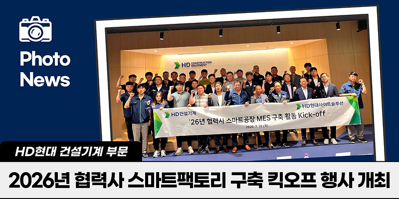
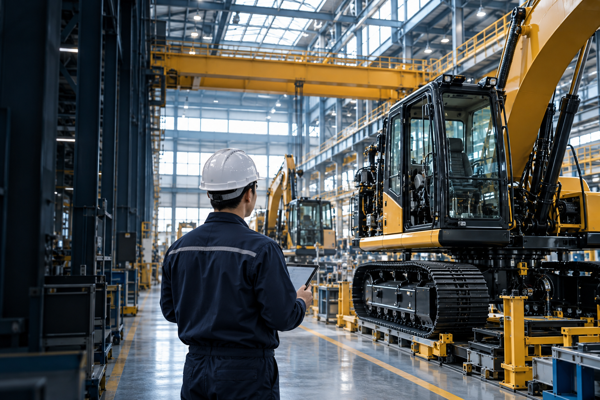
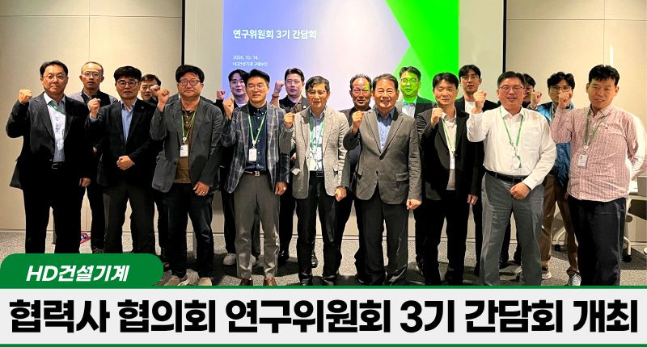
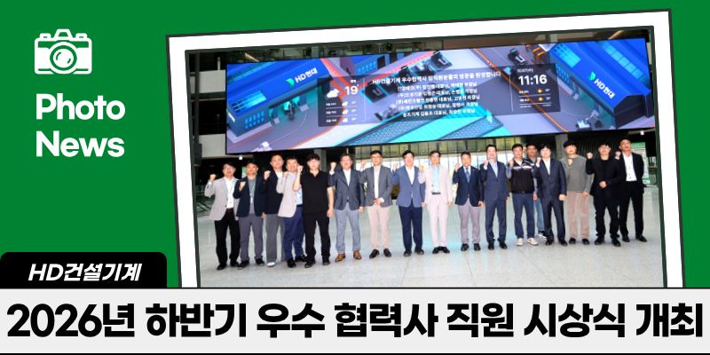

01
관련 기사 보기 : 스마트팩토리 구축 (새 창)스마트팩토리 구축
제조 현장의 디지털 전환을 위한 구축 계획과 추진 로드맵을 공유하며, 협력사의 생산성과 품질 경쟁력 향상을 지원합니다.

제조현장 연출 이미지 · AI 생성협력사육성팀은 협력사의 지속 가능한 성장을 위해 현장과 함께 고민합니다. 제조 혁신과 소통을 통해 동반성장의 기반을 만들어 갑니다.
스마트팩토리 구축으로
생산성과 품질 경쟁력을
함께 높입니다.
현장의 목소리를 듣고
협업의 방향을
함께 찾습니다.
협력사의 노력과 성과를
나누며 신뢰의 관계를
이어갑니다.
협력사의 경쟁력 강화를 위한 현장 중심의 지원 활동을 소개합니다.

제조 현장의 디지털 전환을 위한 구축 계획과 추진 로드맵을 공유하며, 협력사의 생산성과 품질 경쟁력 향상을 지원합니다.

연구위원회와 간담회를 통해 공동 과제의 진행 상황을 나누고, 현장의 애로사항과 협업 방안을 함께 논의합니다.

사업 성과에 기여한 협력사 직원을 포상하고, 현장 격려 방문으로 임직원의 노력에 감사를 전합니다.
정부과제 안내는 준비 중입니다.
공식 공고와 참여 조건이 확인되면
이곳에서 안내하겠습니다.
공식 공고에서
지원 내용을 확인합니다.
지원 대상과 일정 등
신청 요건을 살펴봅니다.
공고에 명시된 서류와
제출 절차를 준비합니다.
협력사와 만들어가는 변화의 순간들을 소개합니다.
출처: HD현대사이트솔루션 Hi-Connect 블로그 · 기사 선택 시 원문이 새 창으로 열립니다.
담당자 연락처는 준비 중입니다.